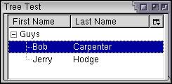

More Tree Features
Here, we'll see more features of trees.
Hierarchical trees
The tree element is also used to create hierarchical lists, like that found in a file manager or a browser's bookmarks list. The tree view has a number of functions which specify the hierarchy of the items in a tree. Each item in the tree has a level starting at 0. The topmost items in the tree will have a level of 0, the children of those items will have a level of 1, the children below that will have a level of 2, and so on. The tree will query the view for the level of each item in order to determine how to draw the rows.
The tree will draw the open and close arrows to open and close a parent item as well as lines connecting the children to their parents. The tree will also handle drawing the rows with the right level of indenting. However, the view will need to make sure it keeps track of the level of the rows as necessary. This can sometimes be quite tricky, but fortunately, the built-in content tree view does all of the hard work for us.
To create a set of nested rows, all we need to do is add a second treechildren element inside the parent treeitem. You can then add items inside that to specify the child rows of an item. Don't put the inner treechildren element inside the treerow as this won't work.
You can repeat this process to create deeply nested trees. Essentially, a treeitem element can contain either single rows which are declared with the treerow element or a set of rows which are declared with the treechildren element.
There are two other things you need to do to make sure the hierarchy works properly. First, you need to mark the treeitem element that has children as a container. You do this by adding the container attribute to it as follows:
<treeitem container="true"/>
This allows the user to double-click on the treeitem to expand and collapse the inner rows. You can have the child rows initially displayed by adding the open attribute. When the user expands and collapses the parent, the view's toggleOpenState function will be called to toggle the item between open and closed. For a content tree view, this will set the open attribute to reflect the current state.
The second change is that you must put the primary attribute on the first column. This causes a small triangle or plus sign to appear before the cells in that column to indicate the cells that can be expanded. In addition, child rows are indented. Note also that the user cannot hide the primary column using the drop down to the right of the columns.
The following is a simple example:
Example 8.2.1: Source View<tree rows="6">
<treecols>
<treecol id="firstname" label="First Name" primary="true" flex="3"/>
<treecol id="lastname" label="Last Name" flex="7"/>
</treecols>
<treechildren>
<treeitem container="true" open="true">
<treerow>
<treecell label="Guys"/>
</treerow>
<treechildren>
<treeitem>
<treerow>
<treecell label="Bob"/>
<treecell label="Carpenter"/>
</treerow>
</treeitem>
<treeitem>
<treerow>
<treecell label="Jerry"/>
<treecell label="Hodge"/>
</treerow>
</treeitem>
</treechildren>
</treeitem>
</treechildren>
</tree> This has created a hierarchical tree. As can be seen in the image, a small plus or minus sign (often called a twisty) has appeared next to the first row, indicating that it contains child rows. By double-clicking the row, the user can open and close the list. The child rows are indented. Notice how the Guys row only needs one column as it is a placeholder item for its children.
The outer treeitem element contains a single treerow element and a treechildren element. The former creates the data for the parent row and the latter contains the child items.
You can nest rows deeper as well. Remember that you must use the container attribute on rows which contain child rows. The simple presence of child rows isn't sufficient to indicate this, as you may have a container that has no children but should still be treated like a container. For example, a directory with no files in it should still be treated like a container whereas a file should not.
More about Tree Columns
One additional attribute you can add to the tree is enableColumnDrag. (Note the mixed case.) If set to true, the user may drag the column headers around to rearrange the order of the columns.
A user will also likely want to change the column widths. You can do this by placing a splitter element in between each treecol element. A small notch will appear in between each column header which the user may drag to change the width of a column. You can use the style class tree-splitter to hide the notch, although the column may still be resized.
You can set a minimum or maximum width of a column using the minwidth or maxwidth attributes.
You can set the hidden attribute on a column to true to have the column hidden by default. The user can choose to show the column by selecting it from the drop-down on the end of the header row.
As with all elements, the persist attribute can be used to save the state of the columns in-between sessions. Thus, once the user has decided on a column layout they like, it will automatically be saved for next time. You will need to save a number of attributes as indicated in the example below:
Example 8.2.2: Source View<tree enableColumnDrag="true" flex="1">
<treecols>
<treecol id="runner" label="Runner" flex="2" persist="width ordinal hidden"/>
<splitter class="tree-splitter"/>
<treecol id="city" label="Home City" flex="2" persist="width ordinal hidden"/>
<splitter class="tree-splitter"/>
<treecol id="starttime" label="Start Time" flex="1" persist="width ordinal hidden"/>
<splitter class="tree-splitter"/>
<treecol id="endtime" label="End Time" flex="1" persist="width ordinal hidden"/>
</treecols>
<treechildren>
<treeitem>
<treerow>
<treecell label="Joshua Granville"/>
<treecell label="Vancouver"/>
<treecell label="7:06:00"/>
<treecell label="9:10:26"/>
</treerow>
</treeitem>
<treeitem>
<treerow>
<treecell label="Robert Valhalla"/>
<treecell label="Seattle"/>
<treecell label="7:08:00"/>
<treecell label="9:15:51"/>
</treerow>
</treeitem>
</treechildren>
</tree>Three attributes of the columns must be persisted, the width attribute to save the column widths, the ordinal attribute which holds the position of the column, and the hidden attribute which holds whether the column is hidden or visible.
(Next) Next, we'll find out to get and set the selection for trees.